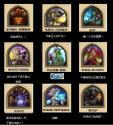
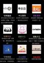

朱军，我好喜欢九宫格，我们来一个九宫格串吧
朱军，我好喜欢九宫格，我们来一个九宫格串吧
>>No.2491045喂喂，有个人画风不对啊

(=ﾟωﾟ)=
>>No.2490702
STAX貌似被漫步者收购了？
STAX貌似被漫步者收购了？
接近一半的人都把守序善良的意思搞错了。
守序善良的意思是要通过秩序来维护善良，强调的是秩序这个手段，中立善良才是纯粹的善良
守序善良的意思是要通过秩序来维护善良，强调的是秩序这个手段，中立善良才是纯粹的善良
>>No.2492120
相反来说中立善良也仅指行善者的善意行为往往不受法律法规限制或一般的道德准则，这样是否真的能算善？按你的解释来看完全出于个人意志的混乱善良才是纯粹的善。
相反来说中立善良也仅指行善者的善意行为往往不受法律法规限制或一般的道德准则，这样是否真的能算善？按你的解释来看完全出于个人意志的混乱善良才是纯粹的善。
>>No.2492183
那是混乱善良
那是混乱善良
>>No.2492183
中立善良是不带偏见或不违反信念去行善的阵营，但在力不能及的时候也不会选择牺牲自己去行善，也不会考虑太多大义的东西
守序善良是结合了荣誉感和同情心的阵营，与其说是善良其实用正义来形容更为合适，遵守秩序并且看不惯一切没有受到惩罚的罪人
中立善良是不带偏见或不违反信念去行善的阵营，但在力不能及的时候也不会选择牺牲自己去行善，也不会考虑太多大义的东西
守序善良是结合了荣誉感和同情心的阵营，与其说是善良其实用正义来形容更为合适，遵守秩序并且看不惯一切没有受到惩罚的罪人
神串留名，顺便一说，我是守序邪恶，有没有丧尸和我一样(=ﾟωﾟ)=
>>No.2492317
(;´Д`)我先跑了
(;´Д`)我先跑了
>>No.2490702
笑死我了 FA的耳机确实很奇葩
笑死我了 FA的耳机确实很奇葩
估计会被打上 贴吧微博水印再转回来
>>No.2492537
我的言行不一。我的内心是守序善良，行为却是中立邪恶，真头疼。另外我最欣赏的是中立善良。
我的言行不一。我的内心是守序善良，行为却是中立邪恶，真头疼。另外我最欣赏的是中立善良。
>>No.2490921
不就是dnd阵营图么
不就是dnd阵营图么

無本文
>>No.2494051
这除了右下，全是侯门子弟啊
这除了右下，全是侯门子弟啊
>>No.2494652
最神的是左中左下还是侯先生两个儿子
最神的是左中左下还是侯先生两个儿子